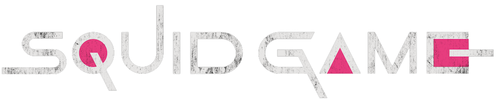
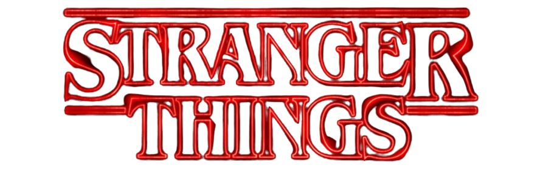
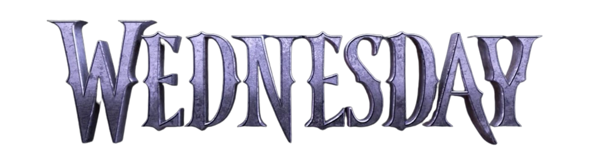

Squid Game (Korean: 오징어 게임; RR: Ojing-eo Geim) is a South Korean survival drama television series created by Hwang Dong-hyuk for Netflix. Its cast includes Lee Jung-jae, Park Hae-soo, Wi Ha-joon, HoYeon Jung, O Yeong-su, Heo Sung-tae, Anupam Tripathi, and Kim Joo-ryoung.
The series revolves around a contest where 456 players, all of whom are in deep financial hardship, risk their lives to play a series of deadly children's games for the chance to win a ₩45.6 billion (US$35 million, €33 million, or £29 million as of broadcast) prize. The title of the series draws from a similarly named Korean children's game. Hwang had conceived of the idea based on his own economic struggles early in life, as well as the class disparity in South Korea and capitalism. Though he had initially written it in 2009, he was unable to find a production company to fund the idea until Netflix took an interest around 2019 as part of their drive to expand their foreign programming offerings.

Stranger Things is an American science fiction horror drama television series created by the Duffer Brothers, who also serve as showrunners and are executive producers along with Shawn Levy and Dan Cohen. Produced by Monkey Massacre Productions and Levy's 21 Laps Entertainment, the first season was released on Netflix on July 15, 2016. Its second, third, and fourth seasons followed in October 2017, July 2019, and May and July 2022, respectively. In February 2022, the series was renewed for a fifth and final season.is school which he credits with exposing him to new music.
The Duffer Brothers developed Stranger Things as a mix of investigative drama and supernatural elements portrayed with horror and childlike sensibilities, while infusing references to the pop culture of the 1980s. Several thematic and directorial elements were inspired by the works of Steven Spielberg, John Carpenter, David Lynch, Stephen King, Wes Craven and H. P. Lovecraft. They also took inspiration from experiments conducted during the Cold War and conspiracy theories involving secret government experiments.

Wednesday is an American coming-of-age supernatural dark comedy television series based
upon the character Wednesday Addams from The Addams Family. Created by Alfred Gough and
Miles Millar, it stars Jenna Ortega as the title character, with Catherine Zeta-Jones,
Luis Guzmán, Isaac Ordonez, Gwendoline Christie, Riki Lindhome, Jamie McShane, Fred
Armisen, and Christina Ricci appearing in supporting roles. Four out of the eight episodes
are directed by Tim Burton, who also serves as executive producer. It revolves around the
titular character, who attempts to solve a monster mystery at her school.
Burton was previously involved with a cancelled stop-motion animated Addams Family film.
In October 2020, he was reported to be helming a television series, which was later given
a series order by Netflix. Ortega was cast in part to represent the character's Latina
heritage. Ricci, who had played the title character in the 1991 film and its 1993 sequel,
was asked by Burton to join the series in a supporting role. Filming took place in Romania
between September 2021 and March 2022.